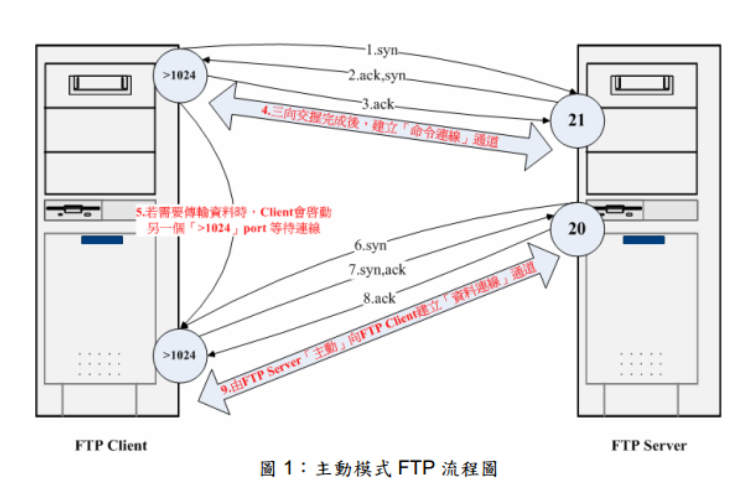

一、FTP的PORT（主动模式）和PASV（被动模式）
（1）PORT（主动模式）
PORT中文称为主动模式，工作的原理： FTP客户端连接到FTP服务器的21端口，发送用户名和密码登录，登录成功后要list列表或者读取数据时，客户端随机开放一个端口（1024以上）， 发送 PORT命令到FTP服务器，告诉服务器客户端采用主动模式并开放端口；FTP服务器收到PORT主动模式命令和端口号后，通过服务器的20端口和客户端 开放的端口连接，发送数据，原理如下图：

（2）PASV（被动模式）
PASV是Passive的缩写，中文成为被动模式，工作原理：FTP 客户端连接到FTP服务器的21端口，发送用户名和密码登录，登录成功后要list列表或者读取数据时，发送PASV命令到FTP服务器， 服务器在本地随机开放一个端口（1024以上），然后把开放的端口告诉客户端， 客户端再连接到服务器开放的端口进行数据传输，原理如下图：

二、两种模式的比较
从上面的运行原来看到，主动模式和被动模式的不同简单概述为： 主动模式传送数据时是“服务器”连接到“客户端”的端口；被动模式传送数据是“客户端”连接到“服务器”的端口。
主动模式需要客户端必须开放端口给服务器，很多客户端都是在防火墙内，开放端口给FTP服务器访问比较困难。
被动模式只需要服务器端开放端口给客户端连接就行了。
三、不同工作模式的网络设置
我在实际项目中碰到的问题是，FTP的客户端和服务器分别在不同网络， 两个网络之间有至少4层的防火墙，服务器端只开放了21端口， 客户端机器没开放任何端口。FTP客户端连接采用的被动模式，结果客户端能登录成功，但是无法LIST列表和读取数据。很明显，是因为服务器端没开放被动 模式下的随机端口导致。
由于被动模式下，服务器端开放的端口随机，但是防火墙要不能全部开放，解决的方案是，在ftp服务器配置被动模式下开放随机端口在 50000-60000之间（范围在ftp服务器软件设置，可以设置任意1024上的端口段），然后在防火墙设置规则，开放服务器端 50000-60000之间的端口端。
主动模式下，客户端的FTP软件设置主动模式开放的端口段，在客户端的防火墙开放对应的端口段。
四、如何设置工作模式
FTP服务器如何设置工作模式？实际上FTP服务器一般都支持主动和被动模式，连接采用何种模式是由FTP客户端软件决定（客户端如果发送PASV命令，就是被动模式，没有发就是主动模式）。
（1）客户端设置
大部分FTP客户端默认使用PASV方式，IE默认使用PORT方式。在大部分FTP客户端的设置里，常见到的字眼都是“PASV”或“被动模式”，极少见到“PORT”或“主动模式”等字眼。因为FTP的登录方式只有两种：PORT和 PASV，取消PASV方式，就意味着使用PORT方式。
1）IE：工具 -> Internet选项 -> 高级 -> “使用被动FTP”（需要IE6.0以上才支持）。
2）CuteFTP：Edit -> Setting -> Connection -> Firewall -> “PASV Mode” 或File -> Site Manager，在左边选中站点 -> Edit -> “Use PASV mode” 。
3）FlashGet：工具 -> 选项 -> 代理服务器 -> 直接连接 -> 编辑 -> “PASV模式”。
4）FlashFXP：选项 -> 参数选择 -> 代理/防火墙/标识 -> “使用被动模式” 或站点管理-> 对应站点 -> 选项 -> “使用被动模式”或快速连接 -> 切换 -> “使用被动模式”。
（2）服务器端vsftp配置：
主动模式配置
Port_enable=YES 开启主动模式
Connect_from_port_20=YES 当主动模式开启的时候 是否启用默认的20端口监听 Ftp_date_port=%portnumber% 上一选项使用NO参数是 指定数据传输端口
被动模式配置
connect_from_port_20=NO
PASV_enable=YES 开启被动模式
PASV_min_port=%number% 被动模式最低端口
PASV_max_port=%number% 被动模式最高端口